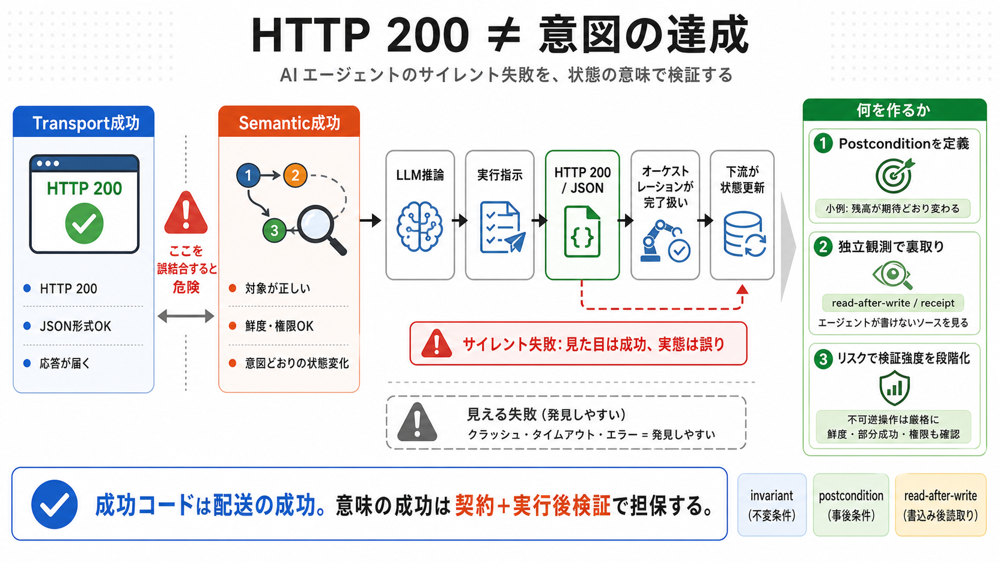

COVER / 要約
02 / 12
Silent meaning failure
HTTP
200
AIエージェントでは「形式上の成功」が“意味の成功”を兼ねないことがあり、検知されないまま下流を汚染します。
Key claim / 要点
最も危険: サイレント失敗
クラッシュやタイムアウトは見えるが、HTTP 200の誤りは見えにくい。
What to build / 目標
検証を「状態の意味」に寄せる
契約（postcondition）と実行後裏取り（read-after-write / receipt）。
PROBLEM / 問題
03 / 12
Transport vs Semantic
成功の
誤結合
HTTP 200 や JSON 形式の正しさは「配送（transport）の成功」に寄りがちで、「意図どおりの状態変化（semantic / state correctness）」を保証しません。
Transport 成功（移送）
HTTP 200・スキーマ整合・レスポンス到達。
Semantic 成功（意味）
対象・鮮度・権限・意図と結果の一致、状態遷移の正しさ。
下流は「形式が通った＝正しい」と解釈して前進し、後で意味の誤りに気づく確率が下がります（サイレントな失敗）。
/ silent failure
：見た目は成功、実態は誤り。
ENUMERATION / 分類
04 / 12
Two failure worlds
見える失敗と
見えない失敗
失敗は「クラッシュ/タイムアウト/エラー」と「成功に見える誤り」に分かれます。致命的なのは後者です。
i
可視的な失敗
：クラッシュ / タイムアウト / エラー → アラート・調査入口が明確。
ii
サイレント失敗
：HTTP 200・JSON正当 → 意味（意図/対象/鮮度/権限）が誤っても完了扱い。
DISTINCTION / 差
05 / 12
Provenance isn’t proof
自己申告の
アリバイ化
confidence provenance tag のようなタグは直感的ですが、タグがエージェントの自己申告であり、検証側が同じ主体に依存すると“説明最適化”でアリバイ化します。
Proposal / 提案
根拠タグ（confidence provenance）で意思決定の到達経路を添付。
Risk / 懸念
自己申告が検証ゲートに影響 → 誤りをもっともらしく覆う方向へ最適化。
Principle / 本質
「タグを信じる」より「独立な不変条件で確かめる」。
（invariant check）
ARCHITECTURE / 構造
06 / 12
Where “done” is decided
オーケストレーションが
完了を誤る
推論→オーケストレーション受理→下流が完了扱い、という典型フローで、成功基準が形式に寄ると意味の誤りが蓄積します。
Upstream / 上流
推論（LLM）→ 実行指示 → 応答生成（HTTP 200 / JSON）。
Downstream / 下流
受理・完了判定 → 状態更新・次ステップへ進む。
問題は「transport成功」が「semantic成功」の代用になってしまう点です。
→ “done” の定義を契約（結果の意味）に寄せる必要があります。
EVIDENCE / 根拠
07 / 12
Independence of inputs
コード分離より
観測経路分離
「検証コードを分けても不十分」です。検証がエージェントの書いたキャッシュや導出データを読むと、同じ嘘に追従します。
Wrong / 誤り
検証が
agent-written state
/ キャッシュ / 導出ログを参照。
Right / 正しさ
検証対象を「エージェントが書けない」ソースから取得。
（read-path independence）
独立性は“ロジックの分離”ではなく“入力（観測経路）の独立”として設計します。
PROCESS / 対策
08 / 12
Contracts + receipt
postconditionで
意味を縛る
有力な方向は、契約としてポストコンディション（invariant / postcondition）を定義し、実行後に世界の状態で確認することです。
Define / 定義
例：$100の引き落としなら「残高が必ず10減る」。
Execute / 実行
エージェントがアクションを実施。
Verify / 検証
read-after-write / receipt で実状態を確認。
重要: 完全な期待差分を全アクションに適用するのは高コスト。リスクに応じて段階化します。
DISTINCTION / 境界
09 / 12
Don’t forget the edges
鮮度・部分成功・権限まで
検証が遅延・鮮度・部分成功（batch wrongness）・認可ギャップまで扱わないと、別のサイレント失敗が残ります。
Freshness / 鮮度
decision_epoch / TTL の一致。stale cache（古い前提）の影響を切る。
Scope / 範囲
部分成功・batch の不整合、許可された能力範囲外アクセス。
形式上正しい応答でも、境界条件が崩れると意味の誤りになります。
COMPARISON / 指針
10 / 12
What to change first
設計の
優先順位
理想は「タグ単独」ではなく、(1) postcondition/受理条件を明確化、(2) 独立観測で裏取り、(3) リスクと可逆性で検証強度を段階化、の組み合わせです。
i
受理条件を意味ベース
にする（transport≠semantic）。
ii
独立オラクル/独立入力
で検証する（read-path independence）。
iii
可逆性と外部可視性で段階化
する（不可逆は厳格に前倒し/実行後裏取り）。
CLOSING / まとめ
11 / 12
Break the link
成功≠妥当性
サイレントな意味ズレは、監視が緑でも致命傷になり得ます。鍵は「成功コード」を輸送の成功に留め、意味の成功を契約と実行後検証で担保することです。
Core lesson / 学び
HTTP 200は“意図の達成”ではない。検証は状態遷移に結びつける。
Safety / 安全
不可逆操作ほど、確認の前倒し＋独立観測＋境界条件（鮮度/権限/部分成功）。
（参考）この要約は提示された投稿・コメント内容の論旨を圧縮したものです。
Bilingual gloss:
invariant（不変条件）
/
postcondition（事後条件）
/
read-after-write（書込み後読取り）
REFERENCES
12 / 12
References
No references found